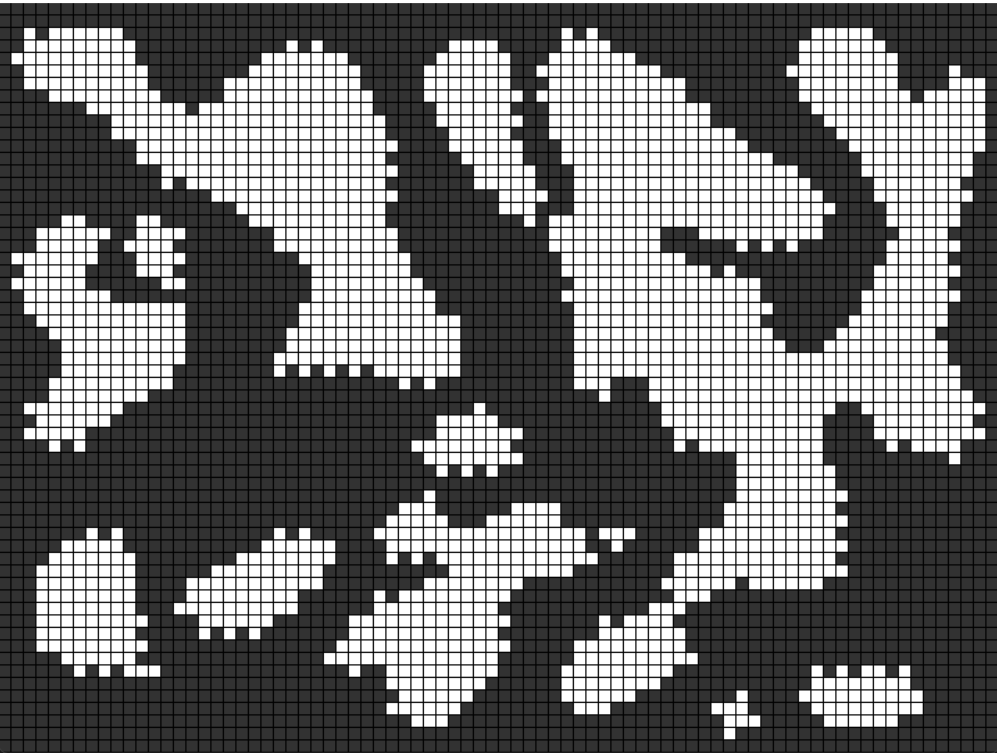
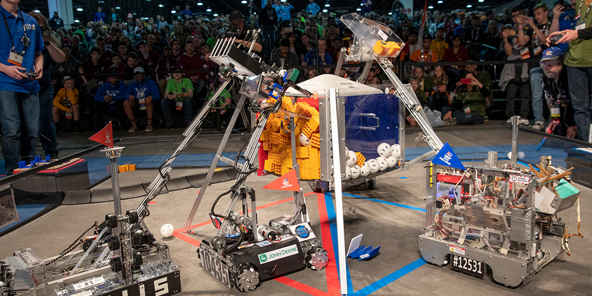
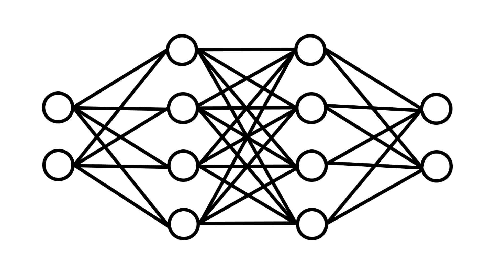

PROGRAMMATION · ALGORITHMIQUE
Génération procédurale
Exploration de techniques algorithmiques pour générer du contenu de manière automatisée.
Découvrir le projet ↗01 — RÉALISATIONS
Programmation, robotique et systèmes intelligents : découvrez les projets à travers lesquels j'explore, j'expérimente et développe mes compétences.

PROGRAMMATION · ALGORITHMIQUE
Exploration de techniques algorithmiques pour générer du contenu de manière automatisée.
Découvrir le projet ↗
ROBOTIQUE · SYSTÈMES EMBARQUÉS
Conception et programmation d'un robot autonome, à l'interface entre logiciel et matériel.
Découvrir le projet ↗
INTELLIGENCE ARTIFICIELLE · SIMULATION
Exploration des réseaux de neurones et de leur capacité à apprendre à partir de données.
Détails à venirET MAINTENANT ?
Une question sur un projet ou une opportunité de collaboration ?
Me contacter ↗